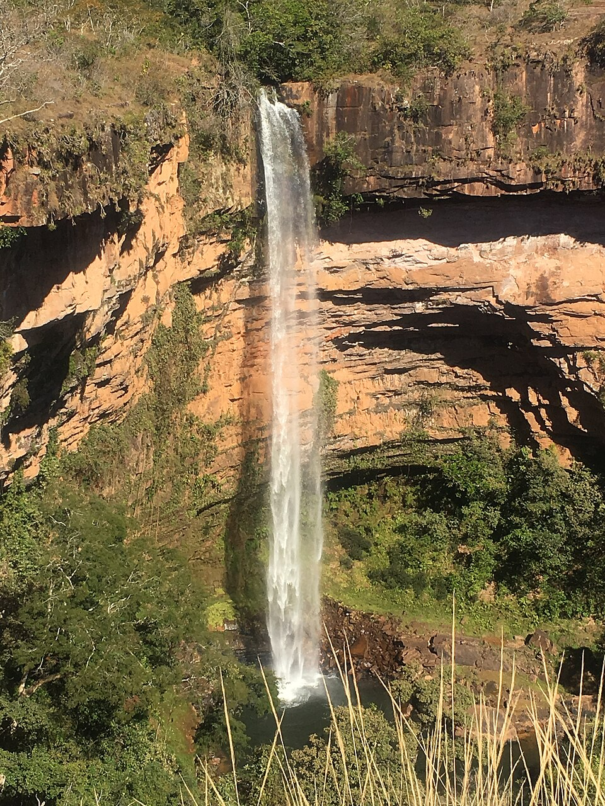
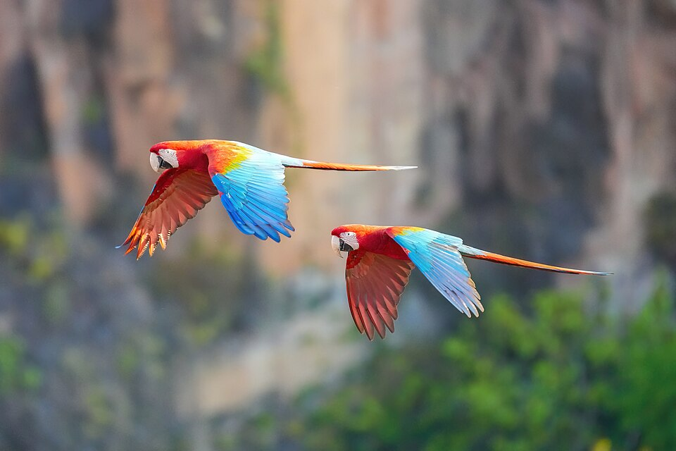
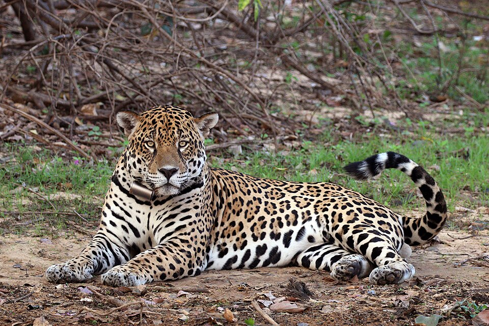
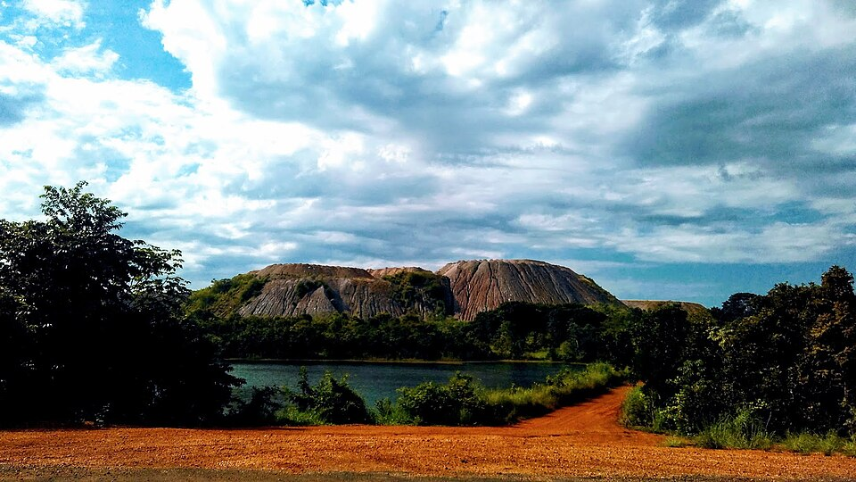

Mato Grosso em 4 fotos
Um passeio pelo Cerrado, pela Chapada e pelo Pantanal.

Cachoeira Véu de Noiva, Chapada dos Guimarães

Araras-vermelhas no Parque Nacional da Chapada

Onça-pintada às margens do Rio Negro

A planície alagada do Pantanal